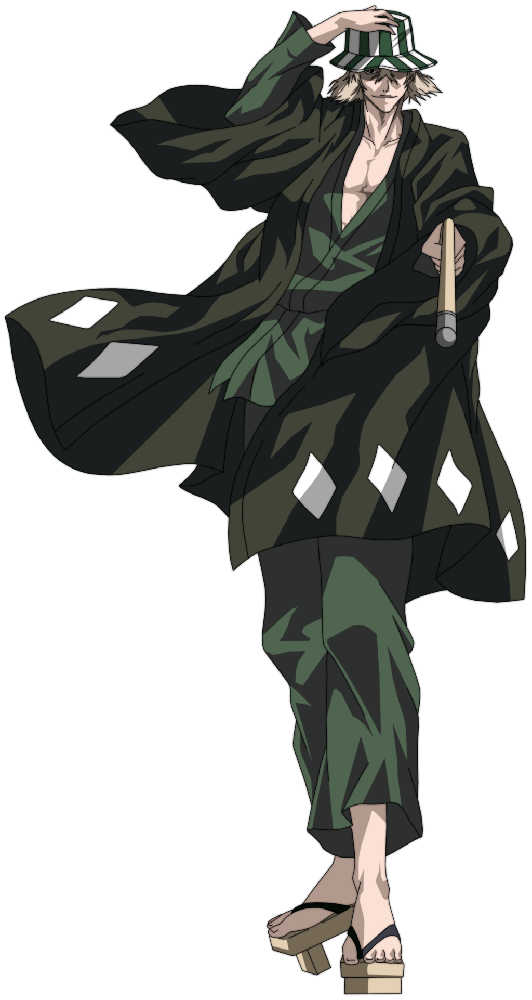
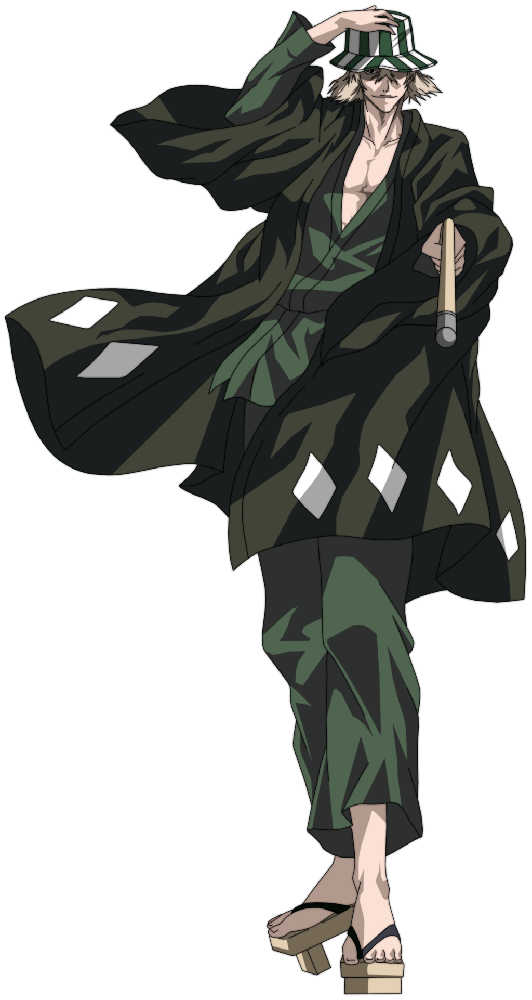

“A warrior who has lost his ability to fight is only going to be in the way.”
“A warrior who has lost his ability to fight is only going to be in the way.”
Kisuke Urahara (浦原 喜助, Urahara Kisuke) is the former captain of the 12th Division, as well as the founder and 1st President of the S.R.D.I. His lieutenant was Hiyori Sarugaki. He lives in the Human World where he owns a small convenience store which sells Shinigami items. He is assisted by his employees Tessai Tsukabishi, Jinta Hanakari, and Ururu Tsumugiya.